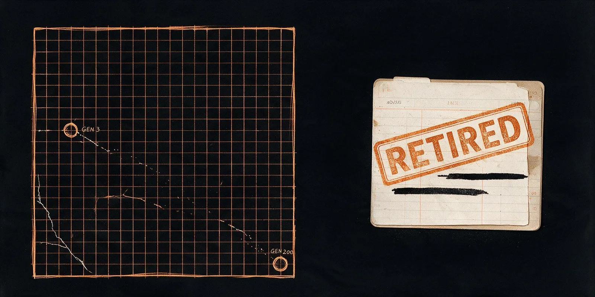
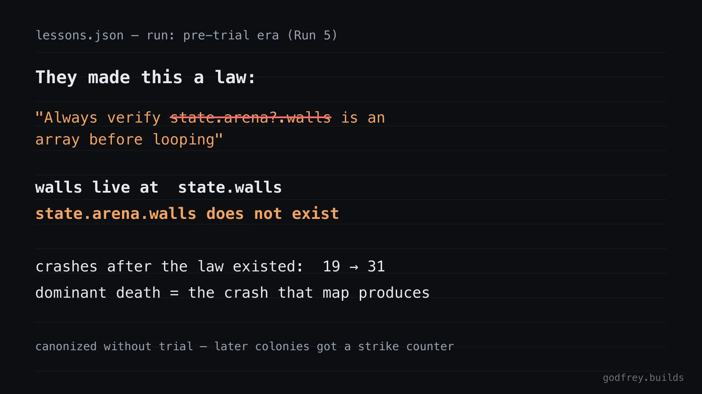

The Week I Built an Evolution Lab

I built a small arena where bots fight each other, wired a cheap model to rewrite the losers, and let the colony run for a week. I wasn't trying to make a bot that wins. I was trying to find out whether a population of AI agents can accumulate real, shared knowledge over time — the way a human culture does — instead of just getting reshuffled by a smarter model every generation. Here's what happened, including the parts that didn't work.
01The bet
I'd been chewing on a question for a while: what actually separates human intelligence from animal intelligence? Not raw brainpower alone — plenty of animals have plenty of brain. My best answer, after reading around it, is culture — specifically cumulative culture. Humans copy solutions from each other accurately, without needing to understand why they work, so each generation starts where the last one stopped instead of starting from zero. Call it the ratchet: copy, vary, filter, and the survivor becomes the new baseline. Reality does the filtering for humans — a bad spear design just doesn't work, and gets discarded.
Modern AI training is already extremely good at the "copy" step — that's what pretraining is. What's usually missing in open-ended domains is the filter, and it's missing a population: one model, one lineage, no divergent cultures recombining. I wanted to build the smallest possible version of a system that has both — a real filter and a real population — and see if anything actually accumulates, or if it just drifts. One week, mostly free models, honest answer either way.
02The arena
The rules, on purpose, are almost boring:
- A 20×20 grid, two bots per duel, 3 hit points each, a 300-tick time limit.
- Line-of-sight shooting with a 5-tick weapon cooldown — no melee, no complexity beyond aim and cover.
- Everything is seeded and deterministic — the same match replays identically every time, and every match is recorded as a full JSON replay I can watch later.
- Win or loss is the only fitness signal. That's the non-negotiable part: no filter means drift, not progress, so the arena needed a free, automatic, unarguable way to say "this one was better."
- Bot code runs untrusted, inside a sandbox, with a hard timeout and a three-strikes forfeit rule, so a broken bot just loses instead of crashing the whole system.
- An archive keeps the single best bot ever seen in each of 36 cells of a grid, binned by two measured traits — aggression and mobility — so the colony holds a whole population of different strategies, not one champion repeatedly beating itself.
Real replays from the 300-generation science arm: gen 4 wanders, gen 61 trades even, gen 218 wins from the corner.
03Mutation
Every generation: pick a random filled cell from the archive — not the best one, a random one — plus a second "inspiration" bot pulled from a distant cell. Hand both to a language model and ask for a mutated child. Picking parents at random from what already works, rather than always breeding the reigning champion, is a deliberate choice borrowed from open-endedness research — always breeding the best tends to converge fast and explore very little. Evaluate the child against a few hand-written baselines and a sample of the archive's current elites. If it beats the incumbent in its cell, it takes over. Repeat, for hundreds of generations.
04Inherited tool libraries
Roughly one mutation in four, the model gets asked to pull a reusable helper — a distance calculation, a line-of-sight check — out of one bot's code and into a shared library instead. Every bot born after that point can call it. This is the actual ratchet mechanic: not a smarter individual bot, but capability sitting somewhere every future generation can reach, instead of getting reinvented — or lost — every time. At its peak this library grew to 18 tools, and in one run the colony called its inherited tools roughly 2.84 million times across a single 100-generation stretch.
05The lessons system
Tools carry capability. I wanted a second channel that carries caution — the "don't eat that berry" kind of knowledge. The system I eventually settled on runs a real belief lifecycle: an observation accumulates (the same crash killing multiple children), a candidate lesson forms only once that pattern is real (five or more instances, not two), the candidate is then run through an actual A/B trial — some children get it injected into their prompt, some don't, and survival is compared — and only a lesson that demonstrably helps gets canonized. Canonized lessons carry an evidence counter and can later be retired if they stop earning their keep.
06The superstition
My first version of that system had no trial step — a pattern got noticed, distilled into a rule by one model call, and injected into every future prompt, untested. It broke almost immediately, and in the most instructive way it could have. From a real string of crashes, the distiller wrote a rule telling every future bot to check state.arena?.walls before looping over it. That's wrong — the game actually stores walls at state.walls. Nobody caught it, because nothing checked it. The colony obeyed the false law for the rest of the run: crashes rose from 19 in the first half to 31 in the second, right after all three of its "commandments" existed, and late bots carried comment headers reading like genuine safety notices — written in good faith, following doctrine straight into new deaths.
The root cause is an asymmetry I should have seen coming: tools only enter the shared library after passing through a real fitness filter — they come from bots that already won. My first version of lessons had no such filter at all. An untested channel is exactly where a culture accumulates its wrong beliefs, same as it would in a human one.

The false law, from the run's own lessons ledger. Crashes went 19 to 31 after it existed.
07Teaching them science
So I rebuilt the pipeline around the trial step described above, and the first real test came almost immediately: a candidate rule about never reassigning a certain variable went to its A/B trial, and the children following it actually crashed more than the control group — 4 out of 4, versus 3 out of 4. Rejected, on the spot, by the trial itself. That's the precise failure Run 5 would have sleepwalked straight into.
Running the same design for 300 generations instead of 100 pushed the mechanism further than I'd expected: two separately canonized rules each failed their own family five times over and were formally retired — repealed with zero human votes, purely because the evidence had turned against them. I watched a small artificial culture propose a law, verify it, adopt it, and later take it back on its own.
A bot under Law 1, adopted gen 33. The law failed its crash family 5 times and was retired at gen 64. Votes: 0 humans.
08The scoreboard
Here's the part that stings a little, and the part I'm keeping in the writeup anyway. I ran the trial-gated "science" colony and a "credulous" colony — same crash-feedback loop, no lessons at all — for 300 generations each, measuring how much of the possible strategy space each one actually explored (archive coverage) and how often bots crashed along the way.
| Arm | Coverage | Best Elo | Crashes |
|---|---|---|---|
| Science (living playbooks) | 91.7% | 1099 | 71 |
| Science (replicate) | 77.8% | 1054 | 240 |
| Credulous (feedback only) | 94.4% | 1079 | 69 |
On raw output, science did not win. The credulous colony matched or beat both science replicates on coverage and on crash count, and it did it with fewer model calls — no lessons machinery to run at all. What science demonstrably bought instead: it prevented the exact superstition that wrecked the naive run, and it caught and repealed its own bad laws without me touching anything.
Science didn't make my bots stronger. It kept them from lying to themselves.
09Nulls and scars
Some of the most useful results in this project were failures I initially wanted to bury. An entire run exists purely to prove that the shared tool library, on its own, did nothing — an earlier mutation prompt was so conservative that children never actually needed a new tool, so the whole inheritance mechanic sat there unused the entire time:
| Arm | Coverage | Best Elo | Mean Elo | Tools |
|---|---|---|---|---|
| Full ratchet (tool library) | 44.4% | 1070 | 1025 | 7 |
| Evolution only (no library) | 47.2% | 1081 | 1022 | 0 |
| Cold sampling (no evolution) | 69.4% | 1039 | 994 | 0 |
Fixing that by making the mutation prompt bolder immediately overcorrected — tool calls exploded past 700,000, and roughly 90% of the back half of that run died to runtime crashes from bots too complex to survive their own mutation. That one got a name: the complexity death spiral.
I built all eight of these runs on roughly a dollar of free-tier model calls — mostly Groq's free gpt-oss-120b — across one week of evenings. Which tells you the actual bottleneck here was never money. It was watching the raw replays closely enough to catch a false belief and a silent bug before trusting a clean-looking summary number.
10What I'd rebuild
Multi-seed replicates from generation zero, not bolted on after the fact — the same "science" config producing 77.8% coverage one time and 91.7% the next is a real number, and every run in this series deserves to be judged against that noise band instead of compared to its neighbors as if each were precise. And I'd want to push one rung further: not breeding better fighters inside one fixed game, but breeding better games for them to fight in — with the tool library surviving the jump from a game to its descendant, so capability compounds across domains instead of resetting every time the rules change. That's next, if there's a next.
Raw receipts — every archive, lessons ledger, metrics file, and match replay: github.com/godfreystorm/ratchet-lab